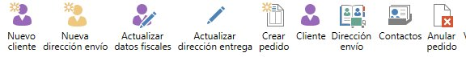

Què cal fer
Un cop confirmat que es pot procedir amb la comanda, anem a la pantalla de precomanda, on hi apareixen:
- Les dades de facturació del client
- Les dades d'enviament
- Una comparativa entre les dades que tenim registrades i les que entren amb la comanda
Les accions de Navision a la precomanda
A la part superior de la pantalla trobaràs la barra d'accions de Navision. Des d'aquí es creen clients i comandes i s'actualitzen les dades:

Barra d'accions de Navision a la pantalla de precomanda
Llegenda de les accions
Nuevo cliente
Crea una fitxa de client nova al sistema
Nueva dirección envío
Crea una adreça d'enviament nova per al client
Actualizar datos fiscales
Actualitza les dades fiscals del client amb les de la comanda
Actualizar dirección entrega
Actualitza l'adreça d'entrega registrada
Crear pedido
Genera la comanda a Navision (pas 6)
Cliente
Obre la fitxa del client
Dirección envío
Consulta les adreces d'enviament del client
Contactos
Consulta els contactes associats al client
Anular pedido
Anul·la la comanda
Abans de crear res, comprova
- Que el codi postal (CP) està correctament creat al sistema. Si no existeix, cal crear-lo
- Que les dades informades a cada camp són correctes. És important per com quedarà registrada la fitxa i l'adreça d'enviament
Verifica abans de clicar cap acció
Abans de clicar cap acció, assegura't que el que indica el client és correcte. Sovint escriuen malament la informació als camps, i moltes vegades nosaltres ja ho hem corregit en comandes anteriors. Per tant, el correcte sol ser el que ja tenim a la fitxa de client, no el que arriba amb la comanda nova.
Només modifiquem clients i adreces existents si realment cal fer-ho.
Ordre habitual de les accions
Si tota la informació és correcta, el flux normal és:
- Client nou: Nuevo cliente → (configurar transportista) → Nueva dirección envío
- Client existent: Actualizar datos fiscales → Actualizar dirección entrega (si és necessari)
Configurar el transportista en crear un client nou
Quan creem un client nou, abans de crear l'adreça d'enviament, cal entrar a l'acció "Cliente" de la fitxa acabada de crear i configurar-hi el transportista que correspon segons el destí i el pes. Així, quan després creem l'adreça, aquesta ja portarà el transportista correcte configurat prèviament.
| Transportista |
Quan s'utilitza |
| MRW |
Enviaments nacionals de menys de 80 kg |
| CBL |
Enviaments península de més de 80 kg, i Portugal amb qualsevol pes |
| TRIAS |
Barcelona i Balears amb qualsevol pes, i Andorra |
| FRANCE EXPEDITION |
Enviaments a França |
| HELLMANN |
Qualsevol altre enviament fora d'Espanya que no sigui França o Portugal |
| LUCHANA |
Illes Canàries |
Camps en vermell
Si algun camp surt en vermell, indica una discrepància entre les dades registrades i les noves. Cal revisar si s'han de modificar o no, segons el que ens indiqui el client.
🚨
MOLT IMPORTANT: adreces d'enviament ja utilitzades
Si el client modifica una adreça d'enviament que ja s'ha fet servir anteriorment, cal avisar en Xavier. Una adreça amb enviaments previs NO s'ha de modificar mai: en tenim un registre d'enviament associat, i si la modifiquem, el TPE registrat ja no tindria aquesta adreça guardada. En Xavier crearà una adreça nova en lloc de modificar l'existent, i així evitem el problema.
ℹ️
Vermell no vol dir error
Un camp en vermell és un avís de diferència, no necessàriament un error. El client pot haver canviat d'adreça legítimament. En cas de dubte, confirma amb el client abans de modificar res.